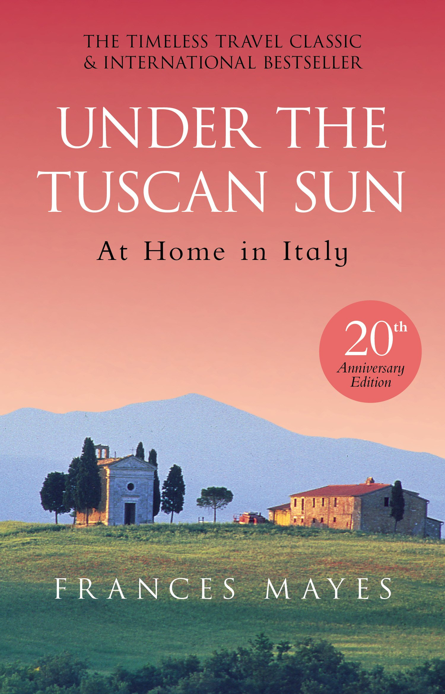

Ben Altschuler
Last year I went to a surf competition in a small town in central Portugal called Peniche.
The weather the first few days was extremely windy, and the ocean looked like a crazy cauldron.
By day 3, the weather turned and the ocean had crisp blue lines stretching from the jetty to the sandbank in front of the event site.
- A rabbit named tuzi.
- A dog named dogecoin.
- A hamster named hamburger.
My favorite restaraunt is: Aromas Del Peru. My brother's girlfriend is from Peru, and her family
introduced us to their amazing cuisine. Peru's food is influenced by Asian, African, and Spanish immigrants, and this restaraunt captures
it all.
This picture is the fancy version of my favorite food. I usually leave it in the smoothie maker cup (shoutout Nutribullet).
I like to blend bananas, yogurt, frozen berries, and spinach. Then I put oats, peanutbutter, and rasins on top!
| Book Name |
Cover Image |
Author |
Summary |
| Barbarian Days: A Surfing Life |
 |
William Finnegan |
This is a memoir detailing the author's passion for surfing, from his childhood
in California and Hawaii to his global adventures in search of perfect waves. |
| A Year in Provence |
 |
Peter Mayle |
A Year in Provence is a memoir detailing Peter Mayle's first year living in the French countryside. He encounters humourous characters and portrays rural life in France. |
| Under the Tuscan Sun |
 |
Frances Mayes |
This is a memoir about the author's experience renovating an old villa in Tuscany. She describes her life immersing herself in Italian culture and cuisine. |
| Toujour Provence |
 |
Peter Mayle |
This is a sequel to Mayle's A Year in Provence. He continues his description of his life in France, adventures, and people he meets. |